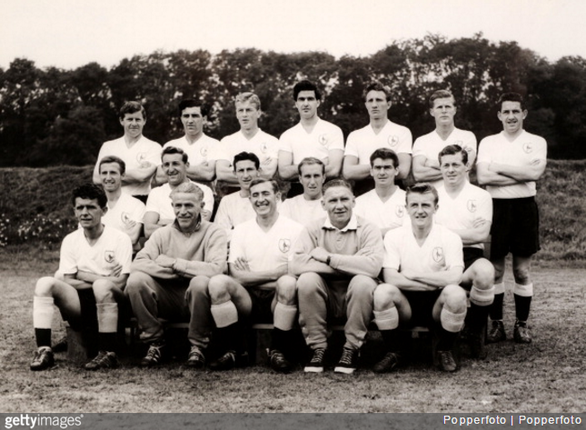

Emanuel's Argument: Why Soccer is better than American Football

When asked, “What is the best sport in the world?” the answer is no doubt soccer. Not only has it been around a lot longer than American football, but it’s played in a lot more regions too. Notice the “American”? It just shows how
limited the sport is to only certain regions. Soccer is also a lot more easier to play. With less rules and hassles and only one objective: get the ball into the net
All you need is a ball, and sometimes you don’t even need a ball, a plastic bottle can do the job just fine.
Over the years different types of games have been created that revolve around soccer because of just how versatile the sport is, and different skill moves allowing players to showcase how creative they can get.